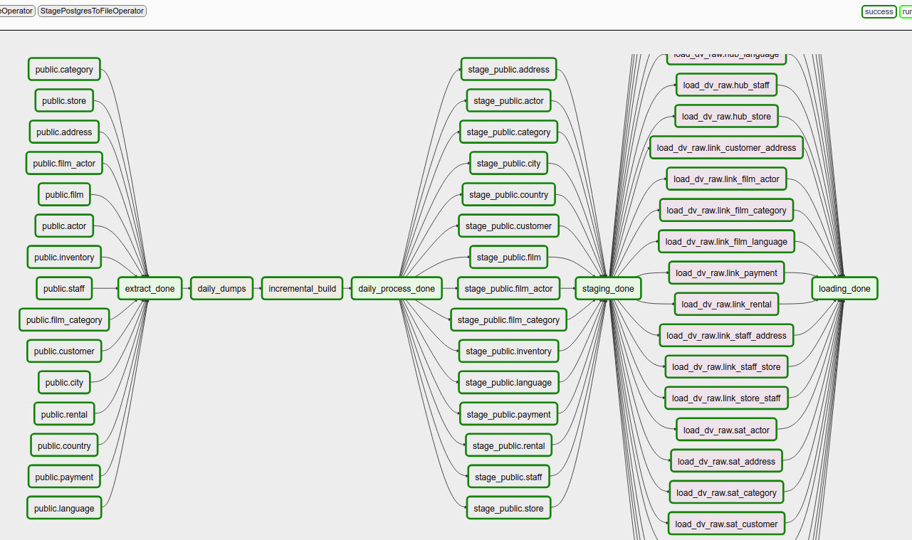

Data Vault with Big Data processes¶
Important
This example is work in progress. The previous example had many disadvantages and after advanced insights, I’ve started reworking the example to become easier to manage.
This example builds on the previous examples yet again and changes the pre-processing stage.
The Datavault 2.0 book contains a picture that displays how you’d extract data from a source system, hashes its business keys and then moves it into the data vault. The datavault 2 example was based on that, but never really explained very well in the book where the hashing should take place when you have multiple source tables with inter-table relationships in 3rd normal form. This is because the main example uses a huge flat file which is then decomposed into different datasets. In my previous example I chose to hash all the keys in the source system query, which I think is wrong and not scalable.
To explain what I mean; if you have:
- an actor made up of (actor_id, first_name, last_name), where (first_name, last_name) are the chosen business key
- a film made up of (film_id, title, release_year, ...), where (title, release_year) is the chosen business key
- a film_actor table made up of (film_id, actor_id), which associates actors with films
Then:
- actor would become a hub
- film would become a hub
- film_actor describes the relationship between films and actors, so it would become a link table
actor and film can easily be loaded in parallel, but there is ambiguity how the business keys for the film_actor link table should be generated. A join is needed to both actor and film to get the desired fields to generate the business key. If you have a full dump of a source system, then you can perform the join in staging and you can also load the link table in parallel to the hubs. If you have an incremental load on any involved table, then you can no longer guarantee that the hub records are in staging, which implies a lookup which according to the methodology is to be avoided.
The same is the case for some satellite tables which are extensions to hub tables (usually a 1:1 relationship), for example a customerdetails table with its own records, potentially has versioned records by ‘date’ and where the primary key points to a customerid in the customer table. The business key is in customer, but it’s not uaranteed that the customer record is in staging when a record in customerdetails changes.
In my view the loading process is the biggest pain of the data vault. Soon as the raw datavault is complete, all the downstream processes are completely clear and workable.
This new example relies on a PSA as well. It is typically discouraged to use a PSA as a strategic mechanism for the data vault, but there are new trains of thought (because of BigData and data laking) where such opinions can change.
Embrace your Persistent Staging Area <http://roelantvos.com/blog/?p=1890> by Roelant Vos.
Important
The implication of a PSA is that in theory, the data vault can be re-generated from scratch. One of the purposes of the data vault methodology, as designed by Dan Linstedt, is that it becomes a “System Of Record”. Recreating it from scratch violates the auditability and traceability properties.
What you gain from a PSA however is that the choice of business key, hashing algorithm, length of hash and other such design decisions can be modified later. The purpose of the PSA however is to support the initial development and deal with incorrect design decisions in the startup phase. Once the data vault is mature, the PSA should no longer be used.
Anyway, continuing the example... I have designed the data extraction as follows:
1. Extract data¶
Extract data from source either as a full table dump or an ‘incremental’ dump. The full dumps go to a preprocessing directory. The incremental dumps go straight to a PSA. My extract doesn’t extract table by table, it groups certain things together, which I call “entities” in the implementation. An entity can be considered an artefact involved in an instance of a business process, so for example an invoice, an order, a product sheet.
In the current example, I’m using advanced SQL functions (2016) to extract nested records. The extract is actually done in JSON, which is handled perfectly in python. Another method could be XML or any other method of exporting data that you can use, as long as it allows you to do the ‘nesting’.
The extract extracts data “as is”, only applying data type transformations to deal with the availability of data types in the output format; for example json doesn’t have a datetime data type, so the output will be a string. These conversions should obviously be standardized (dates and times with timezone info, precision of the output of floats, etc)
2. Process full dumps¶
Because we now have both incremental and full dumps of entities, we should convert the full dump to an incremental dump as well. So we use a dataflow process which compares the entities against an ‘index’ of the entities processed so far. This index contains the primary key, the business key and a checksum of the entire entity. When anything in the entity changed or is new, the entity as a whole will go to the PSA area. This means that unchanged entities are filtered out.
At the end of this process, we have new and changed entities in the PSA area, which is going to be the source of next processing for a specific datetime interval.
3. Process incremental data (PSA)¶
The entities from the incremental area are now processed. An entity usually contains some specific data about the main entity itself and collections of sub records related to the main subject. For example, an invoice has a date, last printed date, etc., a list of a single customer, a list of invoicelines.
There are also references to other entities that need to be resolved. We’ll use the indexes there to resolve the business keys for such elements. For example, a customer is created in a store; we don’t have all the store data available in the customer entity, so we use the store_id in the customer entity to resolve the store business key and store that instead.
The output is an entity that has all the surrogate keys of the source system removed. A “transformation” class is utilized per entity type to generate output files for all the data and child objects in the entity. A single entity can therefore result in the output of multiple files, one per each “target file”.
4. Loading into Hive¶
Each of the output files maps cleanly to a hub/satellite, link/satellite or link table in the data vault. So you could say that the design of the raw data vault is determined in this dataflow process.
Each output file gets generated in “avro” format. This output file is referenced immediately in the “Hive” loading process, which means that the table is immediately available after it is produced (it doesn’t get copied into another table on Hive).
The output is a generic process, determined by the “avro schema file”. The same avro schema file is used in the Hive loading process. The table is only created for the data of a single load interval, so it has its load_dtm appended to its name (actor_20050524T000000).
Principles¶
This section lists some extracted principles that I think are extremely important to consider and they are valid if you build any kind of data warehouse. They are based on perceptions how some ODS’s and Kimball systems evolved and how the specific procedures added complexity or rigidity into the system:
Extract, verify and keep: Extract source data and keep it historied in a PSA forever on practically infinite storage. Cloud storage provides eleven 9’s of durability (1 in 10.000 documents is lost in 1 million years). This means that no other backup scheme can compete with this durability. Why not use that property? Use UTF-8 as standard encoding, verify data types and precision output, etc. The extraction process is very generic, so once you have a generic process that really works, it is very easy to add more tables, which actually can become as simple as adding another line.
Maintain data in lanes: Do not combine data from different sources until the very last moment; delay this as far in the future as possible. Think about processing data as having separate lanes of traffic in your data warehouse. The sooner data becomes integrated, the more processes downstream have to be modified when a source system changes, or when they get replaced. Using views on terminal endpoints for each lane allows you to compare results individually and switch the implementation when the results are clear. The more you can keep data separated in lanes per source system, the less complex the management and future development of your dwh will be. Data Vault does this quite naturally, but you have to act like the guard to enable this and follow its principles.
Divide and conquer: Don’t perform all complicated logic in a single query; massage your data step by step, pivoting, filtering, PITting and bridging until you can produce the end result with simple joins. Add static data to define additional attributes where you may be missing some (never use mystical sequences of magic entity id’s to filter data inside the query, i.e. don’t hardcode identifiers). It’s usually difficult to produce a useful analytical view when you depart from the source operational view, see the next principle!
Work on abstraction layers: Introduce abstraction layers to convert the OLTP design into an analytical structure. Data vault will not allow you to magically transform some OLTP design into a sensible business data model in a single step; the OLTP design always bleeds over into the raw data vault somehow. The OLTP / 3NF design is optimized for operational purposes, so there are important transformations to make there and this requires some thinking. In my example, the abstraction layer is the extracted entity, which allows me to reshape that in meaningful DV structures.
Entities, not records¶
Entities can be compared to documents in NoSQL systems. Although it’s also a challenge to analytically query over those in its own format, there are huge advantages to thinking in terms of entities:
- Less file types; you don’t have one file type per table.
- There is no need to combine files to see the data in closer context
- Each entity is an event or object in a business process (invoice, customer, transaction, etc.)
- Much less code, much less repetition and lower complexity.
- You extract complete artefacts, rather than having to piece the artefact together from loose tables elsewhere.
About the implementation¶
The example builds on the datavault2 example a lot, but some steps were introduced between the source system and the DV processing by sending data to the PSA and integrating the PSA strategically in the entire process.
Airflow shows that a lot of the steps can be run fully in parallel:
